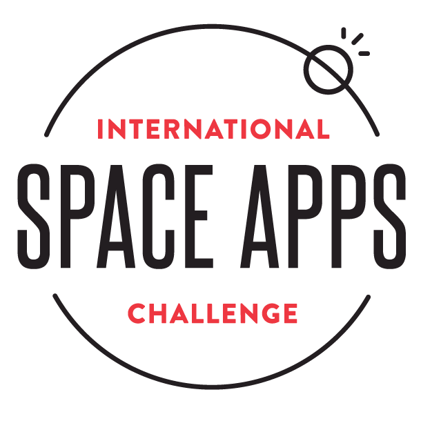

Projects
Nasa Space Apps 2022
I participated in NASA Space Apps 2022 where my team and I decided to work on the project "Twinkle Twinkle Little Star" and create the website "The Base". Our goal was to develop a website that makes learning about stars and the solar system engaging and enjoyable. We designed interactive games and collaborated with NASA to gather essential resources for the website's development. Through this project, we aimed to inspire curiosity and fascination with space exploration among learners of all ages.
